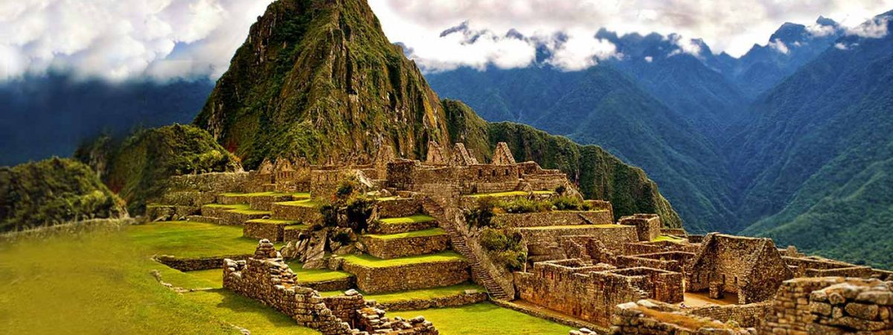

MACHU PICCHU (PERÚ)
Machu Picchu es una ciudad inca rodeada de templos, andenes y canales de agua, construida en lo más alto de una montaña. Su construcción fue edificada con grandes bloques de piedra unidas entre sí, sin el uso de amalgama. Actualmente es considerada patrimonio cultural de la humanidad al ser reconocida como importante centro político, religioso y administrativo de la época incaica.
¿Dónde se ubica?
Machu Picchu que en castellano significa “montaña vieja”, es la ciudadela inca más famosa del mundo. Ubicada a 110 kilómetros al noreste de Cusco, en la provincia de Urubamba, esta joya arquitectónica está rodeada de templos, andenes y canales de agua.
Historia y arquitectura
Construida en el siglo XV, posiblemente a pedido del inca Pachacuteq, Machu Picchu está dividida en dos grandes sectores: el agrícola que comprende una vasta red de andenes o terrazas artificiales y el urbano, formado por diversas construcciones y plazas entre las cuales destacan el Templo del Sol, Templo de las Tres Ventanas, el Templo Principal y el Templo del cóndor. Sus construcciones siguen el estilo clásico inca: edificaciones con muros de piedra pulidos en forma rectangular, unidas entre sí sin el uso de amalgamas, puertas y ventanas trapezoidales.
Datos importantes:
Declarada Patrimonio Cultural y Natural de la humanidad por la UNESCO, al ser considerada como importante centro religioso, político y administrativo de la época incaica. Machu Picchu estuvo interconectado con todo el Imperio Inca a través del Qhapac Ñan, conocida ruta de los caminos del inca. Su temperatura oscila entre los 6.2° y 29.5°, ya que está ubicado en una zona subtropical. Sus meses más lluviosos son de noviembre a marzo. Su majestuosa arquitectura comprende unas 140 estructuras en toda la ciudadela. La altitud promedio de la ciudadela es de 2 450 m s.n.m. Las montañas de Huayna Picchu y Machu Picchu son ideales para las fotografías panorámicas de todo el complejo arquitectónico. Su descubrimiento se debe gracias al investigador Hiram Bingham III quien estaba buscando la última capital de los incas Vilcabamba. Machu Picchu fue declarado “Santuario Histórico del Perú” el año 1981.